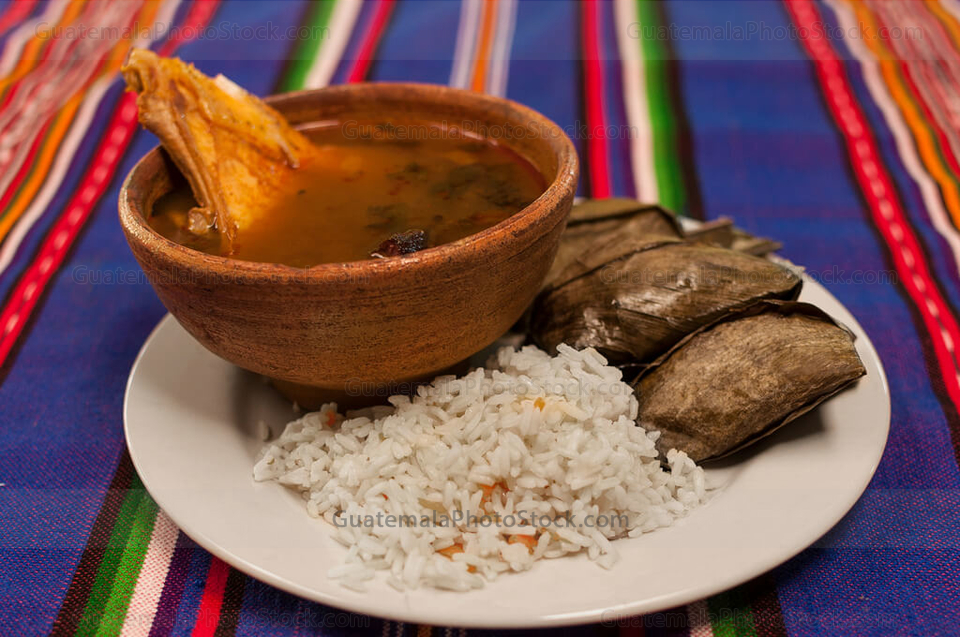
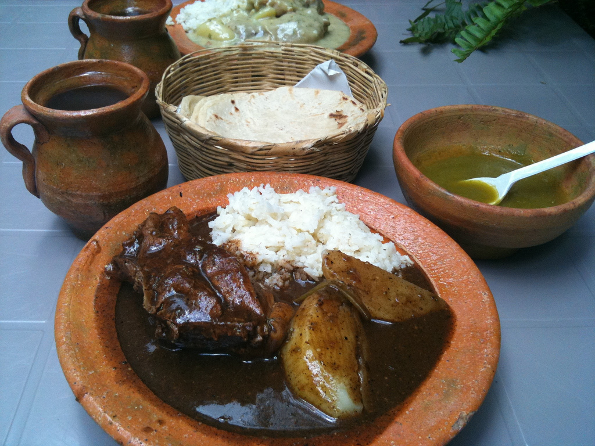
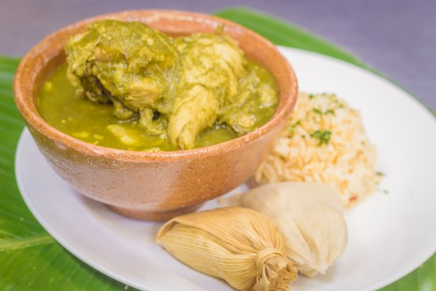
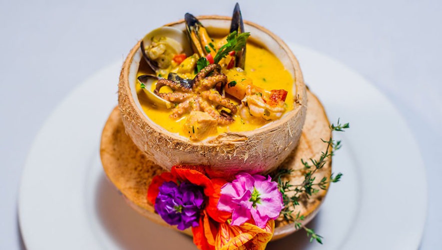
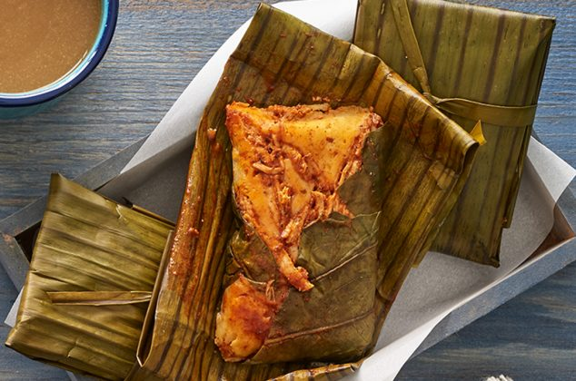

- Kak ik
Un platillo propio de la región q'eqchi', este ha sido declarado un patrimonio cultural. Este caldo posee
una variedad de esecias, verduras y chiles que le dan un sabor que te dejará pidiendo por más.

- Pepián
Este guiso proviene de la fusión de las culturas española y maya, es uno de los platos más antiguos de Guatemala.
El recado es acompañado con pollo, carne de res o cerdo y verduras. Al momento de comer se sirve con arroz y tortillas.

- Jocón
Este plato está compuesto principalmente por carne de garrila criolla o de pollo con salsas tradicionales, es uno de los platos
mas representativos del departamento de Huehuetenango.

- Tapado de mariscos
Este plato es una sopa de mariscos, elaborada con diversos mariscos tales como camarones, pulpos, caracol, entre otros y la base
de la sopa contiene leche de coco,haciendo su sabor sea sumamente delicioso.

- Tamales
Con masa de maíz y un recado junto a pollo o cerdo, los tamales son una comida preferida los sábados, o en las fiestas
de fin de año, junto a un pan francés y café, buenísimos.
